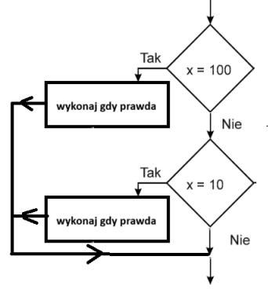
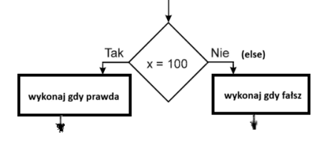

Instrukcja wyboru pozwala wykonać różne fragmenty programu w zależności od spełnienia określonego warunku. Najczęściej używana jest instrukcja if: if (warunek_logiczny1) { // instrukcje jeśli warunek_logiczny1 prawdziwy } if (warunek_logiczny2) { // instrukcje jeśli warunek_logiczny2 prawdziwy }
2) Instrukcja wyboru – schemat blokowy.
Schemat blokowy zawiera romb z warunkiem logicznym.
Jeśli warunek jest spełniony (TAK) wykonywana jest jedna część programu,
a jeśli nie (NIE) wykonywana jest inna część programu.

3) Instrukcja alternatywy – składnia teoretyczna.Instrukcja alternatywy pozwala wybrać jedną z dwóch możliwych dróg wykonania programu. Jeżeli warunek jest prawdziwy wykonywana jest pierwsza instrukcja, w przeciwnym przypadku wykonywana jest druga instrukcja: if (warunek_logiczny) { // instrukcje jeśli warunek_logiczny prawdziwy } else { // instrukcje jeśli warunek_logiczny fałszywy }
4) Instrukcja alternatywy – schemat blokowy.
Schemat blokowy zawiera romb z warunkiem.
Z rombu wychodzą dwie strzałki:
TAK prowadzi do jednej instrukcji, a NIE do drugiej instrukcji.

5) Operatory porównania.
Operatory porównania służą do porównywania wartości.
Przykłady operatorów porównania:
== równe
!= różne
> większe
< mniejsze
>= większe lub równe
<= mniejsze lub równe
Jest różnica między dwoma znakami równości (==) i jednym znakiem równości (=) gdyż dwa razy oznacza porównanie jednej wartości to drugiej a jeden raz oznacza przypisanie wartości do zmiennej
7) Operatory logiczne.
Operatory logiczne pozwalają łączyć kilka warunków logicznych.
&& – AND (i)
|| – OR (lub)
! – NOT (negacja)